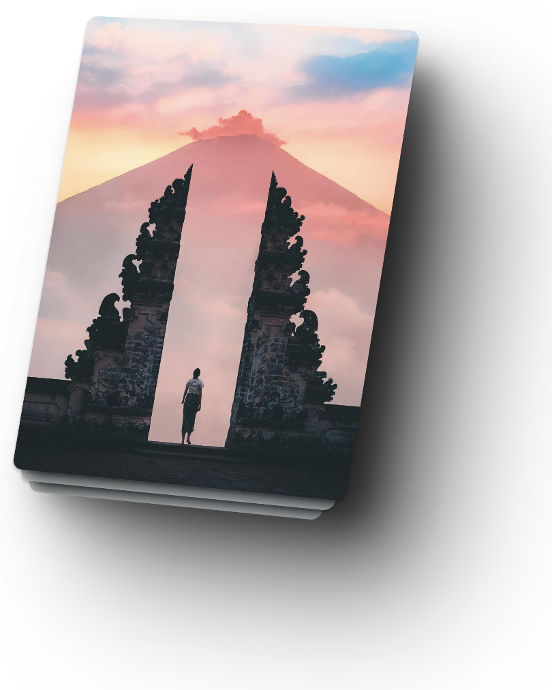
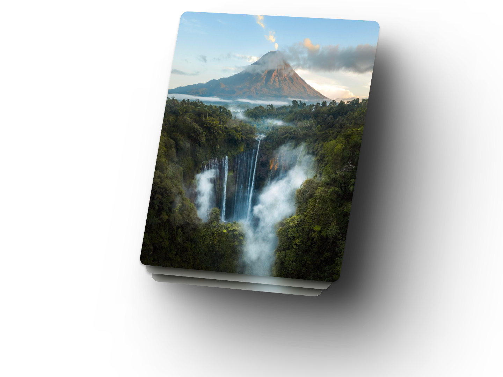

Pesona gunung di Indonesia
Gunung Agung
Gunung Agung, juga dikenal sebagai Gunung Agung, adalah gunung berapi aktif yang terletak di pulau Bali, Indonesia. Gunung ini merupakan titik tertinggi di pulau tersebut, dengan ketinggian sekitar 3.031 meter (9.944 kaki) di atas permukaan laut. Gunung Agung memiliki makna besar dalam budaya Hindu Bali dan dianggap sebagai gunung suci. Gunung ini telah meletus beberapa kali sepanjang sejarahnya, dengan letusan terbesar terjadi pada tahun 1963 dan 2017. Letusan tahun 1963 sangat menghancurkan, menyebabkan kerusakan luas dan korban jiwa. Ini merupakan salah satu letusan terbesar dan paling dahsyat dalam sejarah Indonesia. Karena aktivitas vulkaniknya, Gunung Agung dipantau secara ketat oleh otoritas Indonesia, dan evakuasi periodik dari komunitas di sekitarnya dilakukan ketika ada peningkatan risiko letusan. Meskipun berpotensi berbahaya, gunung berapi ini juga menarik wisatawan yang datang untuk mengagumi keindahannya dan menjelajahi area sekitarnya.
Gunung Rinjani
Gunung Rinjani adalah gunung berapi yang terletak di Pulau Lombok, Indonesia. Gunung ini adalah gunung tertinggi kedua di Indonesia di luar Papua setelah Gunung Kerinci. Ketinggiannya mencapai sekitar 3.726 meter (12.224 kaki) di atas permukaan laut. Gunung Rinjani dikenal karena keindahan alamnya yang spektakuler, termasuk danau kawahnya yang disebut Segara Anak, serta pemandangan panorama yang menakjubkan. Segara Anak merupakan danau kawah yang terbentuk dari letusan gunung yang kemudian diisi oleh air hujan. Danau ini memiliki nilai spiritual bagi suku Sasak, suku asli Pulau Lombok. Selain keindahannya, Gunung Rinjani juga terkenal karena trek pendakiannya yang menantang. Pendakian ke puncak Gunung Rinjani biasanya dimulai dari desa Sembalun atau desa Senaru, dan melalui jalur-jalur yang curam dan berbatu. Namun, perjalanan ini disertai dengan pemandangan alam yang luar biasa, termasuk hutan tropis, padang rumput pegunungan, danau kawah, serta pemandangan Lautan Hindia yang luas. Gunung Rinjani memiliki nilai penting dalam budaya dan kepercayaan lokal. Gunung ini sering kali menjadi tempat peribadatan dan ritual bagi masyarakat setempat, terutama pada saat perayaan-perayaan agama atau upacara adat. Namun, perlu diingat bahwa pendakian Gunung Rinjani memerlukan persiapan yang matang karena jalur pendakian yang menantang dan kondisi alam yang beragam. Keselamatan dan kesehatan pendaki harus menjadi prioritas utama selama perjalanan.
Gunung Tumpak sewu
Gunung Tumpak Sewu adalah salah satu destinasi alam yang menakjubkan di Indonesia, terletak di kawasan Taman Nasional Bromo Tengger Semeru di Jawa Timur. Namanya dalam bahasa Jawa, "Tumpak Sewu", berarti "Seribu Air Terjun", yang merujuk pada ciri khasnya yang paling menonjol: banyaknya aliran air terjun yang menyerupai gugusan air terjun. Salah satu daya tarik utama Gunung Tumpak Sewu adalah air terjunnya yang spektakuler, yang merupakan salah satu yang tertinggi dan terindah di Indonesia. Air terjun utama memiliki ketinggian sekitar 120 meter, dengan air yang turun ke dalam jurang yang dalam, menciptakan pemandangan alam yang luar biasa. Perjalanan menuju Gunung Tumpak Sewu sering kali melibatkan pendakian menantang melalui jalur-jalur yang curam dan medan yang berbatu. Namun, keindahan alam yang memukau dan pemandangan yang menakjubkan yang menanti di akhir perjalanan membuatnya menjadi destinasi yang sangat diinginkan bagi pendaki dan penggemar alam. Selain air terjunnya yang menakjubkan, Gunung Tumpak Sewu juga dikelilingi oleh hutan tropis yang hijau dan pegunungan yang megah, menciptakan suasana yang menenangkan dan memukau bagi para pengunjungnya. Bagi pecinta petualangan dan keindahan alam, Gunung Tumpak Sewu adalah tempat yang harus dikunjungi di Jawa Timur. Namun, perlu diingat untuk selalu menjaga kelestarian alam dan mematuhi aturan-aturan yang berlaku di kawasan tersebut demi menjaga keindahan alam ini untuk generasi mendatang.
Gunung Semeru
Gunung Agung, juga dikenal sebagai Gunung Agung, adalah gunung berapi aktif yang terletak di pulau Bali, Indonesia. Gunung ini merupakan titik tertinggi di pulau tersebut, dengan ketinggian sekitar 3.031 meter (9.944 kaki) di atas permukaan laut. Gunung Agung memiliki makna besar dalam budaya Hindu Bali dan dianggap sebagai gunung suci. Gunung ini telah meletus beberapa kali sepanjang sejarahnya, dengan letusan terbesar terjadi pada tahun 1963 dan 2017. Letusan tahun 1963 sangat menghancurkan, menyebabkan kerusakan luas dan korban jiwa. Ini merupakan salah satu letusan terbesar dan paling dahsyat dalam sejarah Indonesia. Karena aktivitas vulkaniknya, Gunung Agung dipantau secara ketat oleh otoritas Indonesia, dan evakuasi periodik dari komunitas di sekitarnya dilakukan ketika ada peningkatan risiko letusan. Meskipun berpotensi berbahaya, gunung berapi ini juga menarik wisatawan yang datang untuk mengagumi keindahannya dan menjelajahi area sekitarnya.